Comercial del imán NFC con el demo de Glow Up Protein Bar. Lucía demuestra el producto como clienta; el cierre le habla al dueño de negocio que quiere sus propios imanes. Basado en los bocetos del cuaderno, con técnicas de cámara de EyeCannndy, encuadres de Frameset y una luz pop que pasa de fría a color cuando entra el imán.
Formato: vertical 9:16
Duración: ~31 s · 11 planos
Protagonista: Lucía
Demo: Glow Up (aprobado)
Pedido: batido de fresa + waffles proteicos
Imán: 7 × 9 cm
Audio: solo SFX generado con IA, sin voz en off
Versión: v03 · 24-nov-2026
Personaje · Lucía
Clienta frecuente de Glow Up, unos 26 años. Polo holgado verde oliva, jean ancho celeste, zapatillas mostaza. La hoja de personaje se adjunta en cada generación para mantener el mismo rostro y la misma ropa.
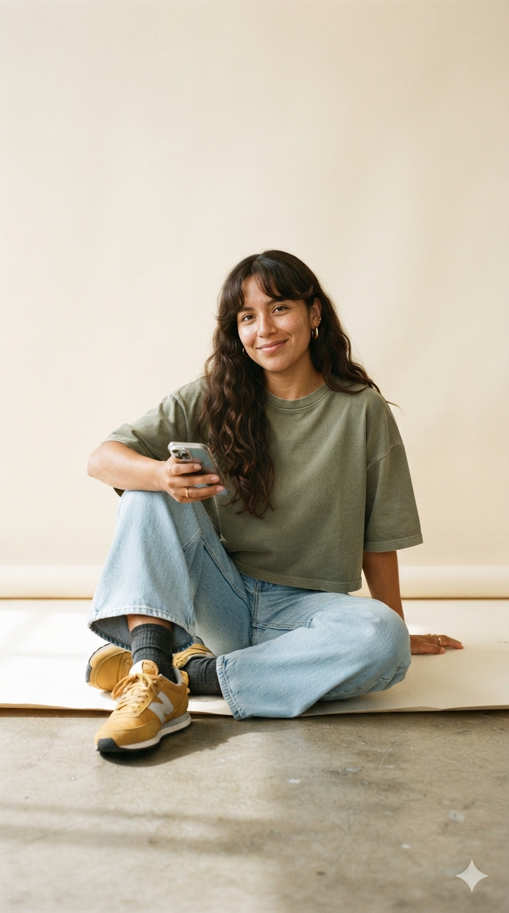
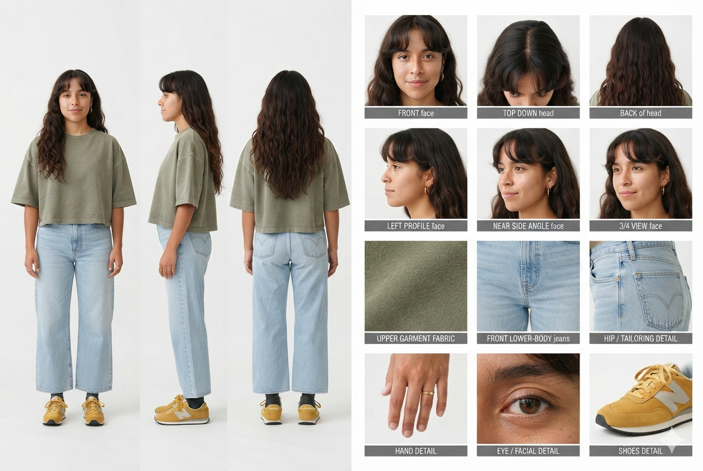
Concepto de luz pop
La luz cuenta la historia. Antes del imán todo es frío y apagado; con el toque NFC el color «se enciende» y desde ahí la pieza vive en rosa fresa y lima, los colores del batido y de Glow Up. Luz dura con sombras marcadas, gelatinas saturadas y fondos de color plano, nada de luz difusa de comercial genérico.
Cian refriActo 1. Luz del interior del refrigerador y cocina de noche: frustración.
Rosa fresaDesde la app (plano 5). Contraluces y rebotes; el color del batido.
LimaAcento de acción: destello del NFC, timbre, botón «Enviar orden».
Verde Glow UpFondos y utilería de la marca: bolsa, imán, placa final.
Naranja / violetaColores propios del gas y la heladería en la pantalla dividida.
Composición estilo Wes Anderson
Los planos de apoyo (los que ubican a Lucía en su casa y en su mundo) van con composición planimétrica: cámara frontal, a 90° de la pared, sujeto al centro y simetría casi perfecta. Contrasta con los planos de acción (toque NFC, ojo de pez, zoom), que van rápidos y deformados. Los planos con esta regla llevan la etiqueta Wes Anderson.
Frontal y centrado: el sujeto en el eje vertical del cuadro, la cámara paralela a la pared del fondo.
Fondos de color plano: paredes y muebles en bloques de color (mostaza, rosa fresa, verde Glow Up), sin texturas que distraigan.
Utilería en espejo: lámparas, plantas o cuadros iguales a cada lado del sujeto.
Movimientos de cámara Wes Anderson (nada de cámara en mano):
Whip pan de 90°: barrido seco de un punto a otro sin cortar (puerta → sala).
Trucking lateral: la cámara se desliza de lado, paralela a la pared, siguiendo a Lucía.
Dolly recto: empujes y alejamientos lentos en el eje central.
Snap zoom: zoom de golpe para remates cómicos (el timbre).
Overhead cenital: insertos desde arriba de objetos ordenados en la mesa o el piso.
Tilt recto: subir o bajar la cámara sin moverla de su eje.
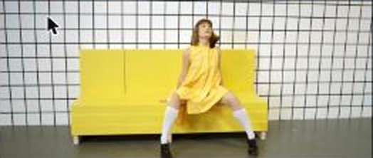
Sofá amarillo, sujeto al centro
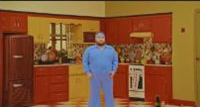
Cocina frontal, sujeto al centro
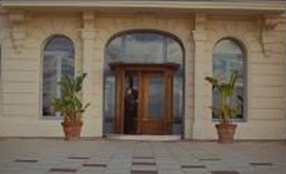
Fachada simétrica
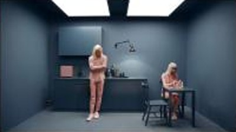
Cuarto de color plano
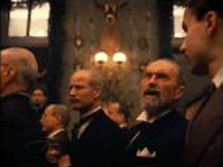
EyeCannndy · Whip Pan
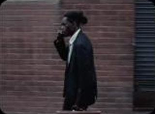
EyeCannndy · Trucking
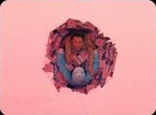
EyeCannndy · Overhead
Acto 1 · El hambre (7 s)
Cocina de noche, todo en cian. Se entiende sin audio.
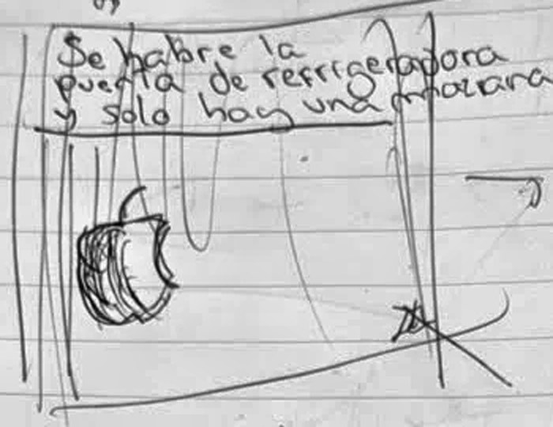
Boceto
Cuadro generado cuadros/01.png
12 s
Oscuridad total: se abre la refri y solo hay una manzana
Empieza en negro total: estamos dentro del refri cerrado. Se abre la puerta, entra la luz y aparece Lucía de golpe, muy cerca e inclinada hacia adentro, buscando. Lo único que ve es una manzana mordida y oxidada en primer plano.
Cámara
POV desde dentro del refrigerador, cámara fija en la repisa, gran angular 16 mm. No se ve la puerta abierta ni a Lucía de cuerpo entero: solo su cara y hombros inclinados, llenando el hueco del refri, con la manzana en primer plano.
Luz
Negro total al inicio. Al abrir, el LED cian del refri se enciende y es la única fuente: le pega en la cara a Lucía; detrás de ella, la cocina casi negra.
SFX
Zumbido del refri, succión del sello de la puerta al abrir.
Ella se inclina, mira la manzana y frunce el ceño. Suspiro.
Cámara
Mismo POV desde dentro, 35 mm, frontal y centrado: las repisas del refri enmarcan a Lucía en simetría, como un cuadro dentro del cuadro. Empuje recto y lento hacia su cara; la manzana queda fuera de foco en primer plano.
Luz
El cian del refri le pega de frente como luz principal. Contraluz magenta suave en el pelo desde la cocina.
SFX
Golpe seco de comedia y un suspiro.
Cian refriRim magenta
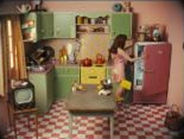
Wes Anderson · cocina y refriEyeCannndy · Dolly (push-in)Cara iluminada por el refri
Lucía cierra con fuerza. Los imanes de colores caen al piso; el de Glow Up, del mismo tamaño que los demás y perdido entre ellos, es el único que no se mueve.
Cámara
Abre con un plano frontal y simétrico de la cocina: el refri al centro, Lucía delante, todo en espejo. Portazo y corte a la puerta en plano abierto, 50 mm, 120 fps en la caída: el imán de Glow Up se ve pequeño, igual que los otros. Cuando los demás terminan de caer, zoom in recto hasta que el imán, solo al centro, llena el cuadro. Remata con un inserto cenital (overhead) de los imanes desparramados en el piso, ordenados como un catálogo.
Luz
Luz dura lateral, sombras marcadas de cada imán sobre la puerta. Todavía fría, cian.
SFX
Portazo, imanes rebotando en el piso, luego silencio total.
CianLuz dura
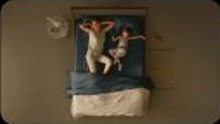
EyeCannndy · Overhead
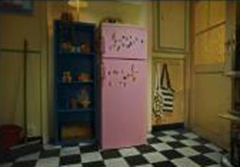
Wes Anderson · refri al centro
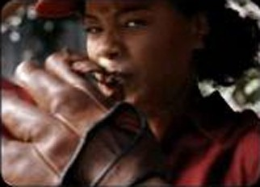
EyeCannndy · Slow Motion
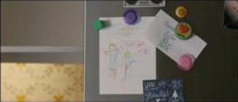
Puerta con imanes de color
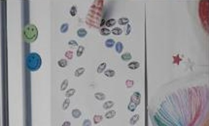
Detalle de imanes
Acto 2 · El toque (13 s)
Tras el ¡pum! del NFC el ritmo se acelera y, al entrar a la app, la luz pasa a rosa y lima. Lucía se registra en segundos y el menú ya la saluda por su nombre. Las pantallas son las reales de Glow Up.
Movimiento muy rápido: saca el celular, lo pega al sello NFC del imán. Vibra.
Cámara
Macro 100 mm sobre el imán. La mano entra con barrido (whip). Rampa de velocidad: rápido, se frena justo en el toque, rápido otra vez.
Luz
Sigue frío: luz cian dura sobre la refri blanca, igual que el plano 3. Sin linterna del celular; lo único que se enciende es la pantalla. El color rosa fresa entra recién en el plano 5, dentro de la app.
SFX
Whoosh del brazo + «pum» con brillo y vibración del celular.
Cian fríoLuz dura
EyeCannndy · Speed Ramp
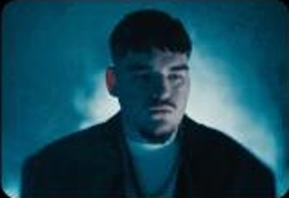
EyeCannndy · Light FlashEyeCannndy · Color ShiftMano con celular, macroCelular con bokeh de color
No aparece la cara de Lucía: es lo que ella ve. Usa la app con los pulgares, todo muy rápido: pone sus datos (nombre, dirección, «Todo listo, Lucia»), aparece «Hola, Lucia», elige batido de fresa y waffles proteicos y toca «Enviar orden».
Cámara
POV en primera persona, ultra gran angular rectilíneo (14 mm) pegado al celular: se deforma en trapecio y los pulgares se ven gigantes. Imagen a cuadro completo, sin el círculo ni los bordes negros del ojo de pez. Las pantallas reales se montan en edición.
Luz
Brillo de la pantalla en los dedos; reflejos rosa fresa y lima en los bordes del celular.
SFX
Toques de pantalla en ritmo, «swoosh» del carrusel, campanita de «Pedido recibido».
Lucía abre la puerta. El repartidor le entrega la bolsa de Glow Up: batido de fresa y waffles proteicos.
Cámara
Plano general frontal desde dentro de la casa, 24 mm. La puerta al centro exacto, el repartidor al centro del vano, utilería en espejo a ambos lados (dos plantas, dos cuadros). Al cerrar la puerta, whip pan de 90° hacia la sala, sin corte, que conecta con el plano 8.
Luz
Contraluz cálido de la calle; la puerta pintada de un color plano (verde Glow Up o rosa).
SFX
Puerta que se abre, bolsa de papel, ambiente de calle.
El boceto dice «Rappi aparece». Rappi es otra marca y no está aprobada: el repartidor va con uniforme y bolsa de Glow Up, o sin marca.
Verde Glow UpContraluz cálido
EyeCannndy · Whip PanWhip pan en interior de color
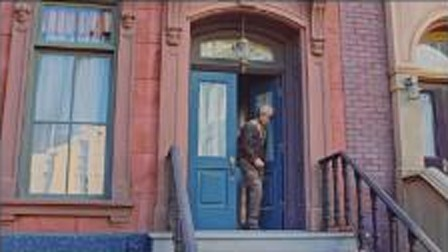
Wes Anderson · puerta al centro
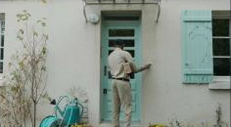
Wes Anderson · alguien toca la puertaEyeCannndy · Central Framing
Con la bolsa recién recibida, Lucía se deja caer en el centro de su sofá, saca el batido de fresa y los waffles proteicos y da el primer sorbo, feliz.
Cámara
Plano americano (de las rodillas para arriba), frontal y simétrico, 35 mm a la altura del pecho. Trucking lateral: la cámara acompaña a Lucía de lado mientras cruza la sala y se detiene en seco cuando ella queda exactamente al centro del sofá. Luego inserto cenital (overhead) de la mesa de centro: batido de fresa, waffles y la bolsa de Glow Up en orden simétrico.
Arte
Sofá mostaza, del mismo color que sus zapatillas, sobre una pared rosa fresa. Dos lámparas iguales y dos cojines iguales en espejo; mesa de centro baja con la bolsa de Glow Up.
Luz
Luz dura frontal un poco alta, sombras limpias detrás del sofá, contraluz lima suave en el pelo.
SFX
Cojín del sillón, bolsa de papel, sorbo largo de pajita.
Sofá mostazaPared rosa fresaContraluz lima
EyeCannndy · Trucking lateralEyeCannndy · Overhead (inserto)Wes Anderson · sofá amarillo al centro
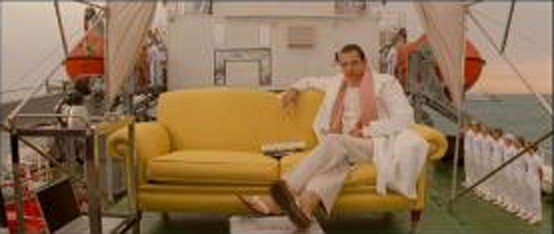
Sofá amarillo, plano frontal
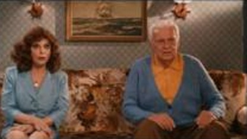
Encuadre frontal centrado
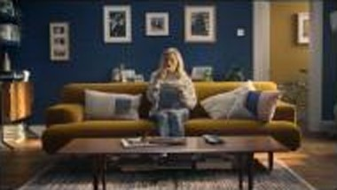
Sala simétrica, sentada al centro
Acto 3 · El giro al negocio (11 s)
Después de la historia de Lucía, el remate en motion graphics: muchos imanes distintos en cortes de medio segundo, para que se entienda que el sistema sirve a cualquier negocio local.
Motion graphics de producto, después de que Lucía se sienta a comer. Diez cortes de 0,5 s, cada uno con un imán distinto: veterinaria, botica, spa, estética, dental, pollería, gas, agua, lavandería y panadería. Que se entienda que es un sistema para muchos negocios, de pedidos y de reservas.
Cámara
Cada imán es un objeto 3D vivo: flota, gira unos grados y se ve su grosor. Alrededor, objetos de su rubro suspendidos en el aire (pelota y huesitos, pastillas, piedras de spa, papas fritas, agua, pan). En cada corte el fondo cambia a un color plano distinto.
Luz
Luz dura de estudio desde arriba a la izquierda, sombra nítida sobre el fondo y brillos en el impreso, como en un anuncio premium de latas o botellas.
SFX
Un «clic» magnético en cada corte, en ritmo con un golpe de bajo; el último corte remata con un «whoosh».
El boceto mostraba otros negocios en pantalla dividida; se reemplazó por este montaje de producto. En toda la historia aparece un solo imán, el de Glow Up.
El montaje termina en el imán de Glow Up, solo y al centro. Su logo se transforma en «Tu marca aquí».
Cámara
Cenital del imán al centro sobre fondo verde Glow Up, 100 mm, quieto.
Luz
Una sola luz dura con sombra marcada; foto de producto limpia.
Texto
En pantalla: «Pedidos y reservas desde tu refri. Tu marca aquí.»
SFX
Chasquido magnético al cambiar el logo.
EyeCannndy · OverheadImán real de Glow Up
Placa final
Cuadro generado cuadros/11.png
113 s
Placa final
Wes Anderson
Texto
«Imanes NFC con tu marca. Desde 50 piezas. Nosotros armamos todo el sistema.» Botón de WhatsApp y logo.
Arte
Fondo verde Glow Up, texto en lima centrado y simétrico, el imán al centro.
SFX
Sonido de mensaje enviado al aparecer el botón de WhatsApp.
Diseños usados en el montaje · 7 × 9 cm
El mismo sistema sirve para pedir a domicilio y para reservar citas o espacios. Diez ejemplos de negocios locales con la misma plantilla de Glow Up: logo, botón, QR, foto y sello NFC. Los nombres son de ejemplo.
Veterinaria · Patitas Vet ReservaBotica · Botica Salud+ DeliverySpa · Spa Lavanda ReservaEstética · Bella Estética ReservaConsultorio dental · Sonrisa Dental ReservaPollería · El Leñador DeliveryGas a domicilio · Gas Express DeliveryAgua en bidón · Agua Pura DeliveryLavandería · Lava Fácil RecojoPanadería · Pan de Casa Delivery
Pendientes antes de grabar
Definir si el repartidor lleva uniforme de Glow Up o va sin marca.
Nombre y logo de tu marca para la placa final.
Imán real: 7 × 9 cm. En los cuadros 3 y 4 se respeta esa escala frente a la refri y el celular.
El paso a WhatsApp dentro del pedido aún no está activo: no se muestra en el acto 2.
Ojo de pez: se puede grabar con lente 8 mm o con un celular con gran angular pegado a la pantalla; probar las dos.
Flujo real capturado
Registro de una sola vez (no entra en el comercial) y pedido.